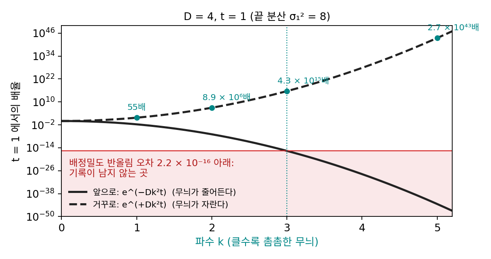

스코어: 퍼지기 전으로 되돌리는 방향
이 장의 물음
사진 편집 앱의 「흐림 제거」를 흔들려 찍힌 사진에 걸어 보면, 굵은 윤곽은 꽤 또렷해지는데 머리카락 같은 가는 결은 살아나지 않거나 원래 없던 결이 그려진다. 그림에 잡음을 섞는 일은 쉬웠다. 그림 한 장에 표준정규 잡음을 원하는 크기만큼 곱해 더하기만 하면 되고, 잡음 섞인 그림들의 분포는 열 방정식을 따라 퍼지며 촘촘한 무늬부터 지워진다. 생성 모델이 할 일은 그 반대다. 순수한 잡음에서 출발해 잡음이 섞이기 전의 그림으로 돌아와야 한다.
그 반대 방향의 일을 이미 한 번 해 보았다. 잡음 크기를 함께 받는 복원기로 순수한 잡음을 조금씩 고쳐 가자 큰 꼴부터 정해지며 새 숫자가 나왔다(수리공의 걸음). 잡음이 가는 무늬부터 덮는 순서를 거꾸로 밟은 셈이다. 다만 그 걸음이 가리킨 쪽이 무엇이고 한 번에 얼마나 옮겨야 했는지는 따지지 않았다. 섞는 쪽은 식 한 줄로 끝났으니, 되돌리는 쪽도 그 식을 거꾸로 풀면 되지 않을까? 이 장은 다음 물음에 차례로 답한다.
- 퍼진 분포에 열 방정식을 거꾸로 적용하면 퍼지기 전의 분포로 돌아갈까?
- 분포를 통째로 되돌리는 길이 막힌다면, 점 하나하나를 되돌리는 길은 있을까? 그러려면 무엇을 알아야 할까?
- 그 「무엇」은 분포의 전체 합을 모르고도 계산할 수 있을까?
- 잡음 섞인 점 하나만 보고 원래 점을 가장 잘 짐작하는 일, 곧 복원기가 하던 일은 그 「무엇」과 어떤 관계일까?
불안정한 문제: 거꾸로 가는 열 방정식
그림에 잡음을 섞어 가는 과정은 열 방정식으로 적힌다. 잡음 분산이 시간에 비례해 σt² = 2Dt로 쌓이면, 잡음 섞인 그림들의 분포 pt는 퍼지는 빠르기가 D인 열 방정식을 따른다. 분포를 여러 촘촘함의 물결무늬로 쪼개 보면(푸리에 성분), 파수 k인 무늬는 모양을 지킨 채 크기만 e^(−Dk²t)배가 된다. 촘촘한 무늬일수록 빨리 사라지는 까닭이다. 그렇다면 거꾸로, 나중 분포의 무늬마다 e^(+Dk²t)를 곱하면 처음 분포를 되찾을 수 있지 않을까?
거꾸로 가면 자라는 무늬
앞으로 가는 동안 촘촘한 무늬일수록 빨리 줄었으니, 거꾸로 돌리면 그 무늬일수록 빨리 자란다.
숫자로 보자. D = 4로 t = 1까지 퍼뜨리면(잡음 분산 σ₁² = 2Dt = 8), 파수 1, 2, 3, 5인 무늬는 거꾸로 돌릴 때 각각 55배, 8.9 × 10⁶배, 4.3 × 10¹⁵배, 2.7 × 10⁴³배로 커진다. 수학으로는 나중 분포가 처음 분포를 하나로 정한다. 그런데 앞으로 가는 동안 파수 3인 무늬는 e^(−36) ≈ 2.3 × 10⁻¹⁶배로 줄었고, 이것은 컴퓨터가 수를 저장하는 배정밀도(유효숫자 약 16자리)의 반올림 오차 2.2 × 10⁻¹⁶과 같은 크기다. 그보다 촘촘한 무늬의 기록은 반올림 오차에 묻혀 사라지고, 거꾸로 돌리면 그 오차가 10¹⁵배 넘게 부풀어 답을 덮는다. 칸을 촘촘히 나눠 계산할수록 더 촘촘한 무늬가 계산에 들어오므로 오히려 더 빨리 망가진다. 이렇게 자료의 작은 오차가 답에서 한없이 커지는 문제를 불안정한 문제 (자료를 조금만 바꿔도 답이 크게 바뀌는 문제 / ill-posed problem)라 한다. 거꾸로 가는 열 방정식이 그 대표다.

ML에서: 열 퍼짐을 거꾸로 돌리는 생성 모델
열 방정식은 그림 한 장의 픽셀 평면에서도 돌릴 수 있다. 리사넨, 헤이노넨, 솔린(2022)은 그림 한 장을 2차원 평면 위의 온도 분포로 보고 열 방정식을 돌려 흐리게 만든 뒤, 그것을 되돌리는 법을 배워 그림을 만들었다. 논문 요약은 열 방정식을 「이미지의 2차원 평면에서 돌리면 촘촘한 규모의 정보를 국소적으로 지우는 편미분 방정식」이라 소개하고, 그 방정식을 「확률적으로」 되돌린다고 적는다. 거꾸로 가는 열 방정식을 그대로 풀면 망가지므로, 잡음을 섞어 되돌리는 길을 택한 것이다. 같은 요약은 보통의 디퓨전 모델에도 「굵은 것에서 가는 것으로」 그리는 성향이 숨어 있음을 스펙트럼 분석으로 보였다고 적는다. 이 모델은 픽셀 평면에서 그림 한 장이 퍼지고, 이 장의 나머지는 데이터 공간에서 그림들의 분포가 퍼진다. 같은 방정식이 다른 공간에서 돈다.
문제 1. 작게 녹음된 목소리
강의실 맨 뒤에서 녹음했더니 교수님 목소리는 크기 0.002, 녹음기 자체에서 나는 쉬익 하는 잡음은 크기 0.01로 녹음되었다(같은 눈금). (가) 파일의 소리를 500배로 키우면 목소리와 잡음은 각각 얼마가 되는가? (나) 잡음이 0.0001인 녹음기로 녹음했다면 500배로 키운 뒤에는 어떻게 되는가?

목소리가 작으면 키우면 되죠. 500배면 목소리가 1이니까 충분히 들려요.

잡음은요?

아… 잡음도 500배라 5예요. 목소리보다 다섯 배 커요. 키울수록 둘이 같이 커지니까 비율은 그대로네요.

(나)는 잡음이 0.0001 × 500 = 0.05라 목소리 1이 스무 배 크게 들려. 키우는 기계가 아니라, 녹음할 때 목소리가 잡음보다 컸느냐가 정하는 거네.
거꾸로 가는 열 방정식도 같아요. e^(+Dk²t)를 곱하는 건 볼륨을 키우는 일이고, 무늬가 반올림 오차보다 작게 저장됐다면 아무리 키워도 오차만 커져요.
조교님이 흐린 스캔본을 보고 「원본을 다시 스캔해 와」라고 하신 게 그래서였구나. 보정으로 되는 게 아니었어요.
문제 2. 조금만 퍼뜨렸다면
데이터 분포가 ±2에 봉우리를 둔 두 봉우리 분포(각 표준편차 0.5)이고, D = 4로 t = 0.25까지만 퍼뜨렸다(잡음 분산 2). 봉우리는 아직 둘이지만 낮고 넓어졌다. (가) 이 분포를 간격 0.05인 칸 800개에 적고 푸리에 성분마다 e^(+Dk²t)를 곱하면 처음 분포를 되찾는가? (나) 파수가 큰 성분을 잘라 내고 되돌린다면 어디까지 살릴 수 있고, 그때 x = 2의 밀도는 참값 0.399에 얼마나 다가가는가? (다) 같은 분포를 잡음 분산 32(D = 16, t = 1)까지 퍼뜨렸다면 살릴 수 있는 파수의 경계는 어디로 옮겨 가는가?

열 방정식은 시간으로 한 번만 미분한 식이니까 처음 값만 주면 해가 하나로 정해져요. 봉우리도 아직 둘이고 많이 퍼지지도 않았으니, 시간을 거꾸로 0.25만큼 풀면 되지 않을까요?

제가 해 볼게요. 성분마다 e^(+Dk²t)를 곱해서 되돌리면… nan이 나왔어요. 계산이 넘쳤나 봐요.

가장 촘촘한 무늬의 배율부터 계산해 봐요.
칸에서 가장 큰 파수가 π/0.05 = 62.8이니까 지수가 4 × 62.8² × 0.25… 3,900이 넘어요. 이건 수가 아니네요.

그래도 이상하다. 수학으로는 해가 하나로 정해져야 하잖아.
정해지긴 해요. 문제는 앞으로 가는 동안 무슨 일이 있었느냐예요.

앞으로 갈 때 파수 k인 무늬는 e^(−Dk²t)배가 됐으니까, k = 6이면 e^(−36) ≈ 2.3 × 10⁻¹⁶배예요. 반올림 오차만큼 작아요. 6보다 촘촘한 무늬의 기록은 이미 반올림 오차에 묻힌 거구나.
그럼 큰 파수는 버리고 되돌리면 되잖아요. 4보다 큰 파수를 버리면 x = 2에서 0.381, 5보다 큰 걸 버리면 0.395, 6이면 0.400이에요. 참값 0.399에 거의 다 왔어요. 조금 더 욕심내서 7까지 살리면… −70이요. 가장 작은 값은 −141이고요.

6을 넘자마자 무너지네. 6까지만 살려도 거의 맞은 건, 처음 분포에서 6보다 촘촘한 무늬가 원래 1%쯤으로 작았기 때문이고.

경계가 6이 된 까닭을 식으로 적으면, (다)는 어디가 될까요?

e^(−Dk²t)가 e^(−36)이 되는 파수니까 Dk²t = 36, k = √(36/(Dt))예요. Dt가 1이면 6이고, 16이면 1.5예요. 잡음 분산을 16배로 키우면 살릴 수 있는 파수는 4분의 1이에요. 1.5면 봉우리 사이 간격 4보다 긴 물결만 남으니, 두 봉우리였다는 것도 거의 못 되찾겠네요.
많이 자르면 가는 정보를 못 되찾고, 덜 자르면 폭발하고. 해가 하나라는 것과 그 해를 구할 수 있다는 건 다른 얘기네요.
풀 수 있는 문제가 되려면 해가 있고, 하나뿐이고, 자료를 조금 바꾸면 해도 조금만 바뀌어야 해요. 서연 학생이 말한 건 앞의 두 조건이고, 거꾸로 가는 열 방정식은 세 번째 조건을 어겨요. 자르는 자리를 6에서 7로 조금만 옮겨도 답이 0.4에서 −70으로 뛰었죠.

복사하고 또 복사한 흐린 종이로 원본 글씨를 되살리는 거네요. 흐린 걸 진하게 하면 글씨보다 복사기 먼지가 먼저 진해지는 것처럼요.
문제 3. 흐리게 해서 저장한 사진
폭 2픽셀짜리 가우시안 블러를 건 사진을 픽셀마다 0~255의 정수(8비트)로 저장했다. 이 블러는 파수 k(1픽셀 길이에 든 라디안)인 무늬를 e^(−2k²)배로 줄인다. 처음 무늬의 진폭이 0.5(밝기 0~1 눈금)라 하자. (가) 저장한 사진에서 되살릴 수 있는 가장 가는 무늬의 파장은 몇 픽셀인가? 8비트 저장의 반올림 오차는 한 칸의 절반, 곧 1/510이다. (나) 8비트 대신 소수점 수(float32, 유효숫자 약 7자리. 반올림 오차 약 6 × 10⁻⁸)로 저장했다면? (다) 이런 사진을 받아 머리카락 결까지 또렷한 사진을 내놓는 생성 모델이 있다면, 그 머리카락 결은 어디서 온 것인가?
8비트면 256단계나 되니까 꽤 가는 무늬도 살아 있지 않을까요?
블러 뒤에 무늬 진폭이 반올림 오차 1/510보다 작아지는 파수를 구해 봐요.
0.5 × e^(−2k²) = 1/510이니까 e^(−2k²) = 1/255, k = √(ln 255 / 2) = 1.66이에요. 파장으로는 2π/1.66 = 3.77픽셀이고요. 3.8픽셀보다 가는 무늬는 저장하는 순간 없어지는 거네요.
(나)는 1/510 대신 6 × 10⁻⁸을 넣으면 k = 2.82, 파장 2.23픽셀이야. 많이 좋아졌는데 2픽셀짜리 가장 가는 무늬는 여전히 안 돼. 그 무늬는 블러로 2.7 × 10⁻⁹배가 됐거든.
그럼 (다)의 머리카락 결은요?
사진 안에는 이미 없는 정보예요. 그러니까 모델이 되살린 게 아니라, 많은 사진을 보고 「이런 얼굴이면 머리카락 결은 대개 이렇다」는 걸 배워 두었다가 그려 넣은 거예요.
맞아요. 거꾸로 가는 길에서 사라진 정보는 데이터 분포에 대한 앎으로 채울 수밖에 없어요. 그 앎을 어떤 꼴로 담을지가 이 장의 나머지 이야기예요.

오래된 녹음을 복원한 음반이 원래 없던 소리를 「그럴듯하게」 채운 거랑 같네요. 문제 1에서 녹음할 때 잃은 건 볼륨으로 못 살렸던 것처럼요.